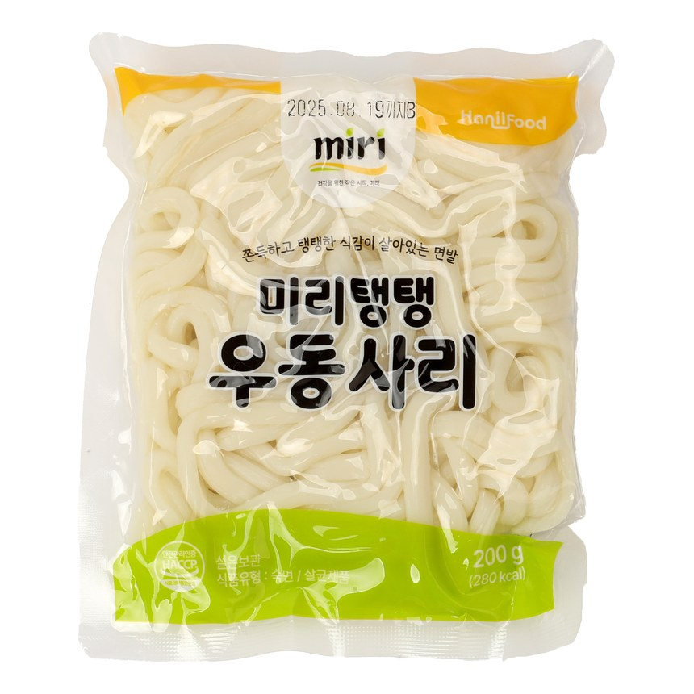

Our premium-grade springy udon noodle, extra-bouncy and made for foodservice.
| Product Name | miri Premium Springy Udon Noodle |
|---|---|
| Net Weight | 200g · 30 ea / carton |
| Shelf Life | 12 months |
| Storage | Store at room temperature (1–35°C) |
| HS Code | 1902.19-1000 |
| Main Ingredients | Wheat flour, tapioca starch, salt. |
| Nutrition (per 200 g (whole pack)) | 280 kcal · Protein 7 g · Carbohydrate 61 g · Sugars 0.4 g · Fat 0.8 g · Saturated 0.2 g · Trans fat 0 g · Cholesterol 0 mg · Sodium 290 mg |
| Certifications | HACCP · ISO 9001/22000 |
| Private Label / OEM | Available |